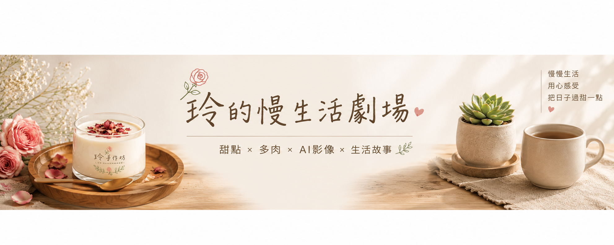

BEFORE
BEFORE｜產品概念
玫瑰蜂蜜與純白奶酪的核心賣點。
以玫瑰、蜂蜜、純白奶酪為核心，建立從倒扣、蜂蜜慢流、花瓣飄落到品嚐與品牌收尾的 30 鏡頭產品廣告。
把產品的質地變成故事：先建立產品，再讓蜂蜜、花瓣與湯匙切面逐步放大感官，最後回到品牌與一句「每一口，都值得慢一點。」
玫瑰蜂蜜與純白奶酪的核心賣點。
用微距、慢動作與感官特寫建立節奏。
從產品特寫回到 Logo 與完整品牌訊息。
此處已預留 YouTube / Vimeo / MP4 影片嵌入框架。
不放不存在的外部連結；保留乾淨的專業展示區，方便之後嵌入你的成片。


完整產品廣告分鏡
第一口／蜂蜜／花瓣／切面／表情
每一口，都值得慢一點。